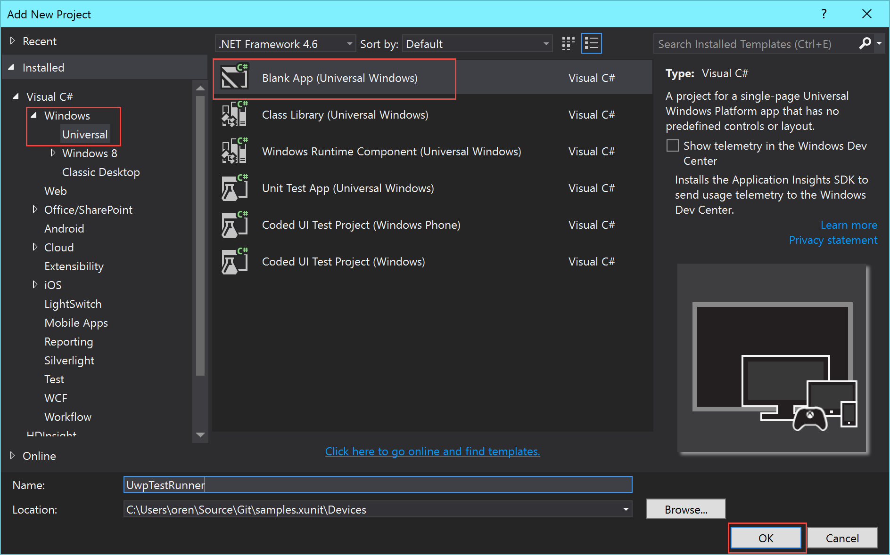
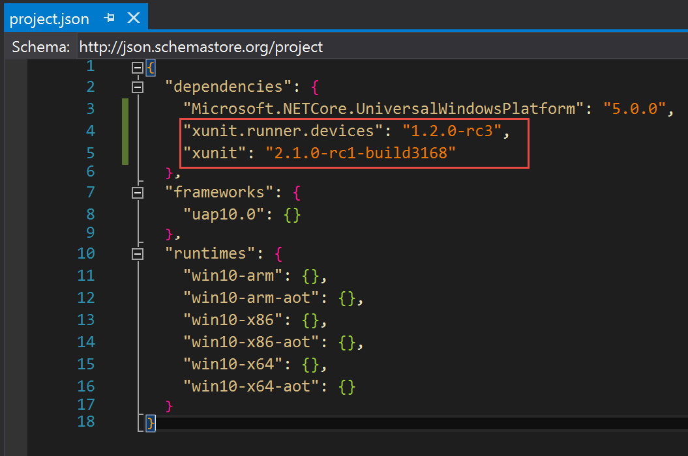
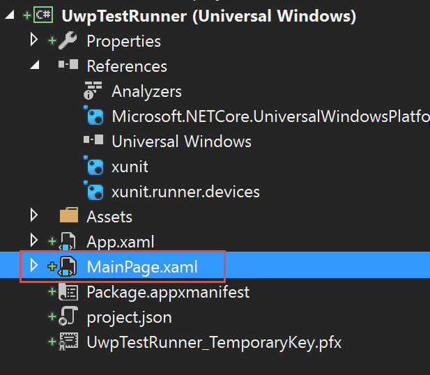
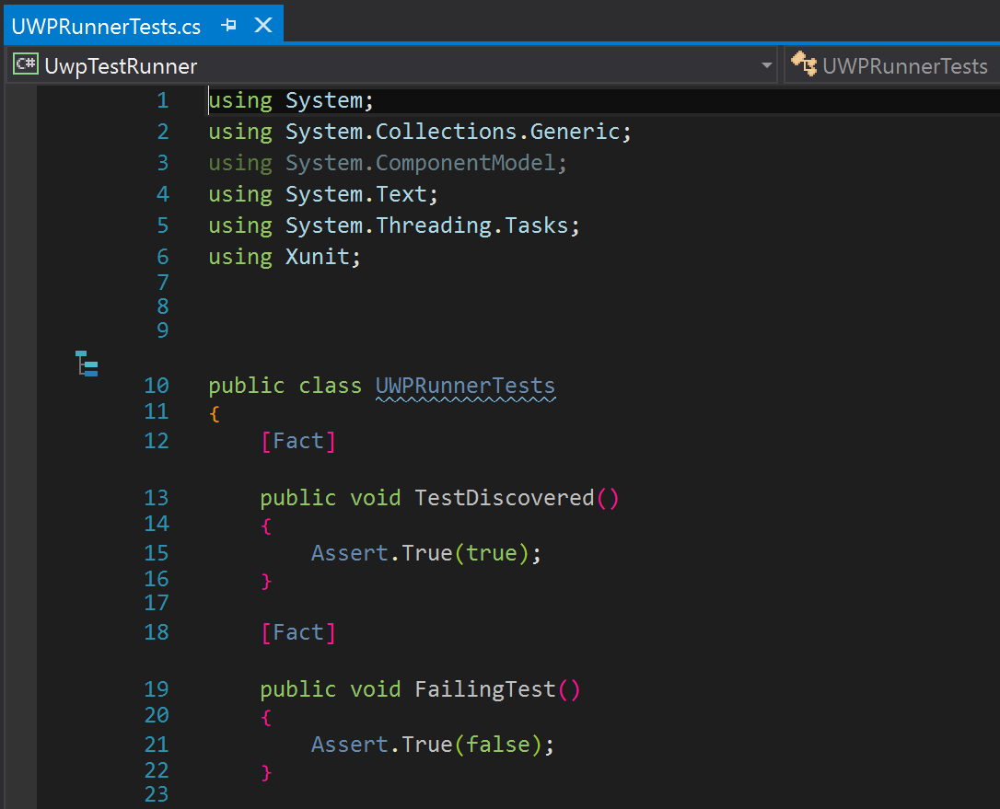

File -> New Project and create a Blank UWP project:

xunit.runner.devices package. If you want unit tests in this project, also add xunit:

App.xaml and App.xaml.cs with the following (using your namespace in x:Class):
- App.xaml
{% highlight xml %}

- App.xaml.cs
{% highlight C# %} using System.Reflection; using Xunit.Runners.UI; namespace UwpTestRunner { sealed partial class App : RunnerApplication { protected override void OnInitializeRunner() { // tests can be inside the main assembly AddTestAssembly(GetType().GetTypeInfo().Assembly); // otherwise you need to ensure that the test assemblies will // become part of the app bundle // AddTestAssembly(typeof(PortableTests).GetTypeInfo().Assembly); } } } {% endhighlight %}

MainPage.xaml and MainPage.xaml.cs:


App.xaml.cs to include the assembly containing your tests
xunit.runner.json file as Content to specify runner configuration